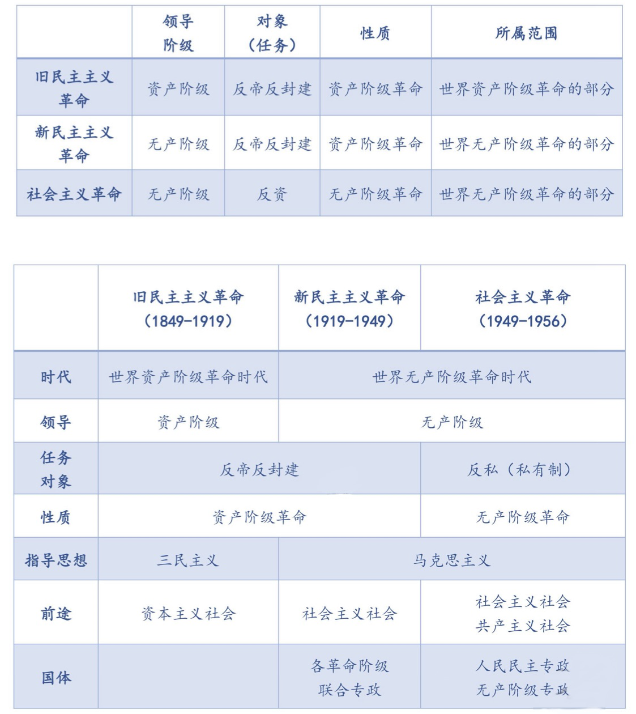

开天辟地的大事变
2022.09.07
李大钊著作
- 1918年7月,他发表《法俄革命之比较观》一文,指出：“俄罗斯之革命是二十世纪初期之革命，是立于社会主义上之革命”，向中国人民第一次正确地阐述了十月革命的性质。
- 1918年11月、12月，李大钊相继发表《庶民的胜利》《布尔什维主义的胜利》两篇文章,深刻揭露了第一次世界大战的本质，热情歌领了十月革命和布尔什维主义的胜利，欢呼“将来的环球，必是赤旗的世界”。
- 1919年9月、11月，他又发表《我的马克思主义观》一文，明确地把马克思主义称为“世界改造原动的学说”，并且对马克思的唯物史观、剩余价值学说和阶级斗争理论作了比较系统的介绍。这表明，李大钊已经成为中国的第一个马克思主义者。
三次革命对比
